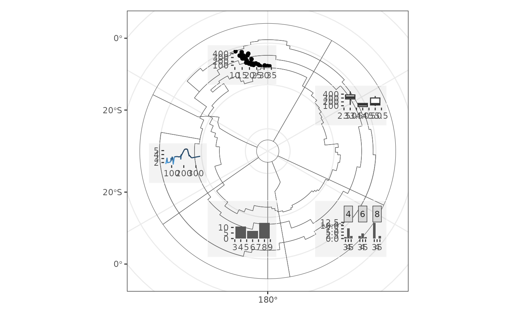

library(measoshapes)
#> Loading required package: sf
#> Linking to GEOS 3.10.2, GDAL 3.4.1, PROJ 8.2.1; sf_use_s2() is TRUE
library(dplyr)
#>
#> Attaching package: 'dplyr'
#> The following objects are masked from 'package:stats':
#>
#> filter, lag
#> The following objects are masked from 'package:base':
#>
#> intersect, setdiff, setequal, union
library(measoshapes)
## using ggplot2 we set up a basic plot, for re-use
## with subplots over our map - turn off grids, borders
## and background colour
library(ggplot2)
g0 <- ggplot(mtcars) + xlab(NULL) + ylab(NULL) +
theme_bw() +
theme( panel.grid.major = element_blank(),
panel.grid.minor = element_blank(),
panel.border = element_blank(),
panel.background = element_blank(),
rect = element_rect(fill = "#44444411"))
## now use that basis plot and create various data plots
## p1:p5, variously scatterplot, bar chart, boxplot
p1 <- g0 +
geom_point(aes(mpg, disp))
p2 <- g0 +
geom_boxplot(aes(gear, disp, group = gear))
p3 <- g0 +
geom_line(aes(hp, wt, colour = mpg)) +
theme(legend.position = "none")
p4 <- g0 +
geom_bar(aes(gear)) +
facet_wrap(~cyl)
p5 <- g0 +
geom_bar(aes(cyl))
## create the background map, just simply our
## region outlines
g <- ggplot(measo_regions05) +
geom_sf(fill = "transparent") +
theme_bw()
## now use patchwork to compose
library(patchwork)
## the layout takes the background map, and then p1:p5
## placing them first in a 10*10 column figure
## and each p1:p5 falls in its own
## t(op), l(eft), r(right), b(ottom) column number or range
layout <- c(
area(t = 1, l = 1, b = 10, r = 10),
area(t = 3, l = 5, b =3, r = 5),
area(t = 4, l = 7, b = 4, r = 7),
area(t = 6, l = 4, b = 6, r = 4),
area(t = 8, l = 7, b = 8, r = 7),
area(t = 8, l = 5, b = 8, r = 5)
)
## finally, draw it
g + p1 + p2 + p3 + p4 + p5 + plot_layout(design = layout)
#> old-style crs object detected; please recreate object with a recent sf::st_crs()
#> old-style crs object detected; please recreate object with a recent sf::st_crs()
#> old-style crs object detected; please recreate object with a recent sf::st_crs()